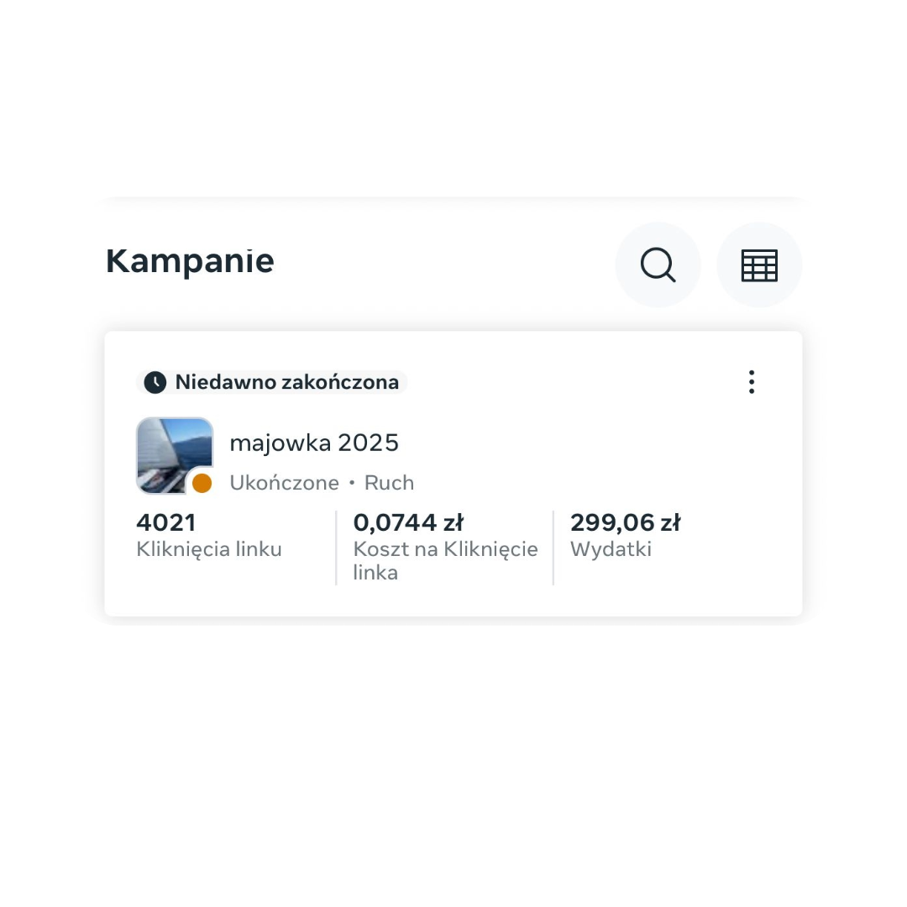

W branży, gdzie budżety kampanii potrafią przyprawić o zawrót głowy, a cena za klik (CPC) bywa równie wysoka, co wymagania klientów, każdy grosz ma znaczenie. Szczególnie, gdy na warsztat bierzemy produkt, który sam w sobie stanowi wyzwanie marketingowe – bo drogi, bo specyficzny, bo "wkładu" do materiałów jak na lekarstwo, a i potencjalnego klienta ciężko wyłapać w sieci. W tym konkretnym przypadku mówimy o luksusowych wycieczkach na jachcie po Adriatyku. Produkt premium, wymagający dotarcia do klienta zamożnego, który ceni sobie unikalne doświadczenia.
Mieliśmy ostatnio taką sytuację. Typowy "trudny przypadek", gdzie start kampanii na Facebooku mógłby przypominać pływanie pod prąd w kisielu. Brakowało gotowych kreacji, produkt nie sprzedaje się sam, a my musieliśmy dotrzeć do bardzo konkretnej, niezbyt licznej i… zamożnej grupy docelowej. Na polskim rynku Facebooka nie ma możliwości segmentowania użytkowników po dochodach, co dodatkowo komplikowało zadanie.
Wyzwanie? jak najbardziej! niemożliwe? nie dla collytics!
Co ważnej, ta kampania była na samym szczycie lejka sprzedażowego (Awareness - Świadomość). To ten etap, na którym dopiero "zarzucamy sieci", badamy teren i budujemy świadomość o marce lub produkcie wśród szerokiej, potencjalnie zainteresowanej grupy. Nie oczekujemy tu od razu spektakularnych konwersji (na to przyjdzie czas w niższych partiach lejka), ale zależy nam na efektywnym dotarciu i wstępnym zaangażowaniu.
Zamiast rozkładać ręce, odpaliliśmy nasze analityczne silniki i kreatywne zapędy. Wiedzieliśmy, że musimy podejść do tematu sprytnie. Nasza strategia targetowania objęła połączenie targetowania geograficznego (bogate dzielnice w największych polskich miastach) z targetowaniem na zainteresowania, które świadczą o zamożności i zamiłowaniu do luksusu – dodaliśmy m.in. luksusowe linie lotnicze, takie jak Emirates . Do tego dołożyliśmy angażujący kontent: piękny klip stworzony przy pomocy AI, ożywiony fajnymi zdjęciami z poprzednich rejsów, który od razu mówił "tu chodzi o styl i wyjątkowe przeżycia".
Efekt? wyniki mówią same za siebie
Kampania na platformie Facebook Ads, która na tym wstępnym etapie – uwaga, uwaga – osiągnęła średni koszt za kliknięcie na poziomie... 0,0744 PLN! Tak, niecałe osiem groszy za klik, na górze lejka, dla luksusowego produktu, przy sprytnym omijaniu ograniczeń targetowania! W dodatku z całkiem solidnym CTR na poziomie 7% , przy łącznej liczbie aż 4021 kliknięć i budżecie zaledwie 299,06 zł . To tak, jakby za grosze rozstawić ogromną sieć w "dobrych rejonach internetu", do której wpadają ryby, które faktycznie wyglądają na zainteresowane naszym "specyficznym haczykiem" luksusowej podróży.
A co ze "wskaźnikiem przyciągania uwagi" 53%?
Ten wskaźnik, choć jego nazwa może się różnić w zależności od platformy czy narzędzia analitycznego (często mówimy tu np. o View Rate), jest bardzo, BARDZO dobrym wynikiem! Jeśli 53% osób, którym wyświetliła się reklama, zostało "przyciągniętych", czyli zatrzymało się na niej na kluczowe, pierwsze sekundy, to oznacza, że:
- Pierwsze wrażenie działa: Początek wideo lub sama kreacja od razu wzbudziła zainteresowanie. W świecie, gdzie użytkownicy scrollują content w zawrotnym tempie, zatrzymanie uwagi ponad połowy z nich to duży sukces.
- Targetowanie działa (na "przyciągnięcie"): Pomimo trudności w dotarciu do zamożnej grupy docelowej, reklama wyświetlała się osobom, które uznały ją za na tyle interesującą, by poświęcić jej chwilę.
- Kreacja działa (na "przyciągnięcie"): Ten klip AI z pięknymi zdjęciami najwyraźniej miał w sobie to "coś", co sprawiło, że ludzie przestawali scrollować.
W połączeniu z niskim CPC (0,0744 PLN) i wysokim CTR (7%), ten wskaźnik 53% "przyciągania uwagi" maluje bardzo obiecujący obraz kampanii na szczycie lejka (Awareness): tanio dotarliśmy do potencjalnie zamożnej grupy, skutecznie przyciągnęliśmy ich uwagę, a ci, których uwagę przyciągnęliśmy, chętnie klikali.
Podsumowanie: myślenie poza schematem
Ten wynik to nie tylko powód do dumy, ale też dowód na to, że w Collytics potrafimy zamienić marketingowe wyzwania w realne sukcesy. Nieważne, jak trudny jest produkt, jak skromne są materiały czy jak niszowa grupa docelowa – potrafimy znaleźć drogę do klienta na każdym etapie lejka sprzedażowego i zrobić to efektywnie kosztowo.
Jeśli macie na swoim pokładzie "trudne" produkty albo kampanie, które wydają się skazane na pożarcie przez wysokie CPC, zwłaszcza na etapie budowania świadomości dla luksusowej grupy docelowej, dajcie znać. Z chęcią pokażemy Wam, jak nasza analityka i optymalizacja potrafią zdziałać cuda, dbając o każdy grosz Waszego budżetu. W końcu, po co przepłacać za kliknięcia w reklamy luksusowych wycieczek, skoro można mieć je za... niecałe 8 groszy? 😉